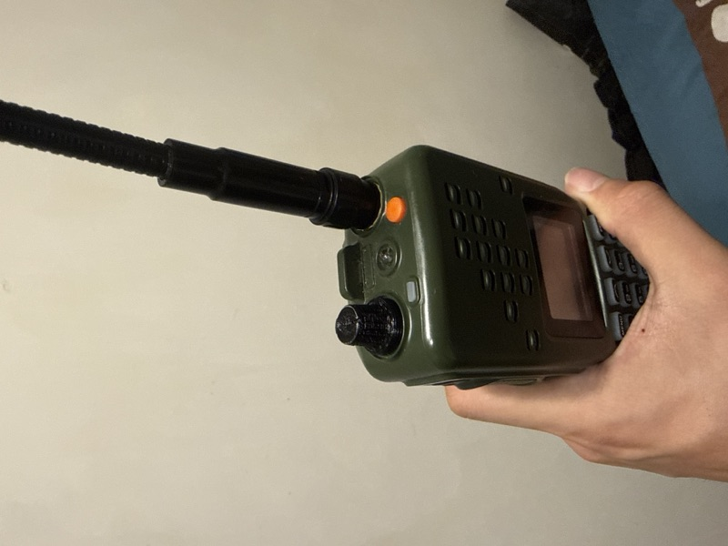

About
I'm currently an undergraduate at CSIE department, National Taiwan University.
I love using 3D printing to solve problems I run into.
Projects
-

Senior Gaming Assistance System (Under review)
This project introduces a real-time input translation system that allows older adults to play existing button-based games using intuitive body gestures, without modifying the original game content. To design the interaction set, we conducted a gesture elicitation study to collect user-defined movements grounded in older adults' everyday experiences. Based on these findings, we developed a proof-of-concept system that translates body gestures into controller inputs in real time and evaluated it through gameplay sessions with two commercial games on the Nintendo Switch platform.
Mini Projects
-

mini knob
I found that the volume knob on my radio was oversized and easily turned accidentally while I was moving around, often causing the radio to switch on or off unexpectedly. To solve this problem, I designed and 3D-printed a smaller knob that reduces the overall width without sacrificing ease of operation, making accidental activation much less likely.
-

Smash bot
This is a final project of "Robot Perceptron and Learning".
We built a competitive gameplay bot for Super Smash Bros. Melee using a hybrid approach that combines imitation learning and reinforcement learning. The model first learns from professional gameplay data and then improves through self-play against in-game AI opponents. To accelerate training, we designed a pipelined framework that significantly increases learning efficiency. The resulting agent is capable of using FALCO to defeat Level 7 hard coded bots (CP7).
We're still cleaning up our repo; the link will be uploaded later. -
Vivid Pikachu
This is a final project of "Making and Inventing Interaction Devices".
In this project, we used 3D printing and digital fabrication to create most of the physical components of an interactive Pikachu device, including its input and output devices (excluding the motor and core electronics). The system has digitally fabricated sensors—such as a flex sensor in the tail and a multi-touch petting surface—as well as servo-driven ear movements and sound output. Through iterative design, we figured out a way to fix the challenges in printing conductive sensor and mechanical connections, while identifying the practical limitations of conductive printing materials for interactive device development.
Contact
Feel free to reach out via email or socials.